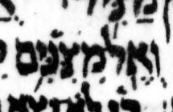

{kind=link}

| מִצִנִּ֥ים מִצִּנִּ֥ים |
5:5 | צ lacks דגש in μL, says DM but not BHQ |
There is little or no evidence of a דגש in the צ in μL. The consensus has this דגש.
It is said (from direct inspection of μL in Russia) that there is “a pale yellow dot in the [צ] which could be the trace of a worn-off [דגש]” in Viktor Golinets, “Dageš, Mappiq, Specks on Vellum, and Editing of the Codex Leningradensis”, KUSATU 15/2013, p. 242 (2013).
This is interesting to know, since this pale yellow dot is not visible in the color image. All that is present in the color image is a slight smudge between the צ and the נ. This smudge closely resembles other nearby smudges.
Though interesting, this report of a pale yellow dot still falls well under the “little” of my assessment that there is little or no evidence of a דגש here.
As is often the case, here BHQ has the consensus rather than the best guess as to the actual contents of μL.
U — M — μL (page 398A, col 2, line 22):
μA (Aleppo) (page 271r, col 2, line 23, word 2):

μY (Cambridge 1753) (page 74A, col 1, line 4, word 5):
